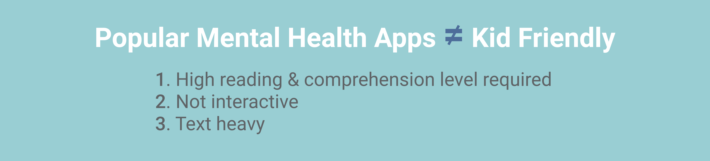
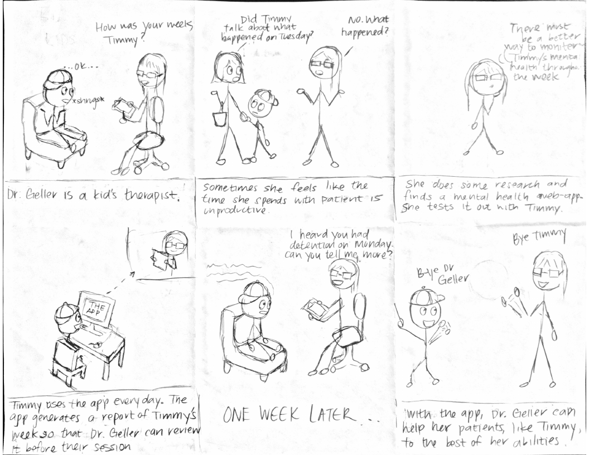
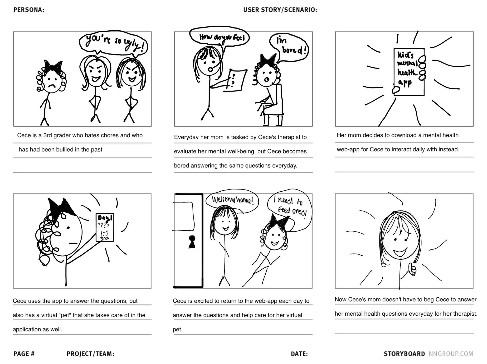
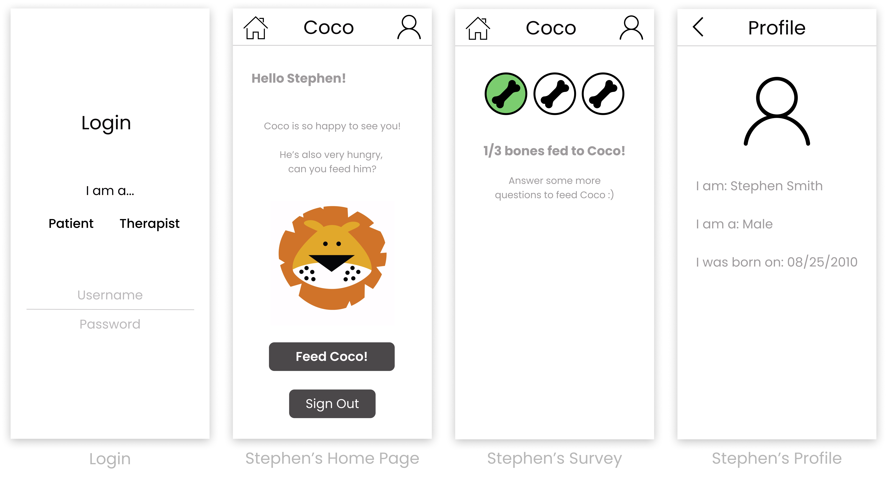
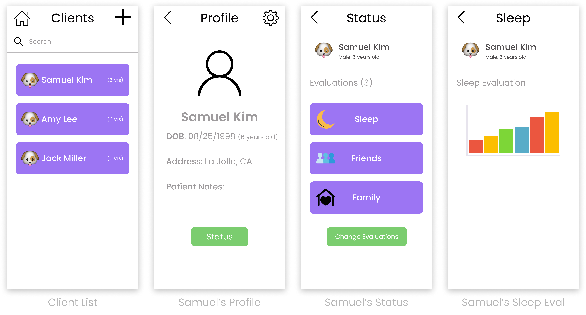

Coco
Case Study | April - June 2019
Overview
Coco is a mobile app designed for therapists to track the mental health of young clients. Therapists can curate the type of survey questions for each client based on the child's circumstances. When the kids finish their questions, their virtual cat 'Coco' gets fed, which gives kids a reason to respond regularly!
Responsibilities
- Researching children's mental health
- Analyzing competitor apps
- Sketching paper prototypes
- User testing + making changes
- Coding final prototype
Problem
A child's mental health is critical to their growth and ability to reach their full potential! Many factors can positively and negatively impact a child's mental health & recording those factors and learning from them is a great way to strengthen their mental health.

There are many apps focused on mental well-being! They generally contain multiple choice and open ended questions that require thoughtful answers, as well as different mindfulness exercises. While these apps are great for adults who have a greater understanding of mental health, these apps aren't kid-friendly!
Research
Storyboards
To start off our research, we constructed storyboards to target the main goal of our app. We want to focus on creating a better experience for kids who are currently seeing a therapist, so we have 2 scenarios to help structure our app functionalities.

storyboard of improving unproductive therapy sessions
It's hard for a lot of kids to open up, especially to someone like a therapist, and maybe they just don't know what to share or forget about things that happened to them, which leads to hours of unhelpful therapy sessions. Our idea is to create a kid-friendly mental health tracker so that there will be records of their days that the therapist will have access to. The therapist can look over the child's entries and be able to structure the session with this information.

storyboard of making mental health tracking more fun
This storyboard illustrates how the web-app will get kids excited to talk about their feelings. Now knowing that we want to create a mental health tracker, we discuss how to overcome some obstacles of daily journaling. Our second storyboard further explores how we will make the mental health tracker kid-friendly. To combat answering boring questions, we want to make our app interactive by giving the kids a virtual pet to take care of by answering the questions daily.
Analyzing Competitor Apps
Now that we had our idea, we wanted to explore mental health trackers designed specifically for kids available on Apple's App Store. While we found many mental health trackers for adults, only one app resulted in our 'mental health tracker kids' search, and it wasn't even a mental health tracker!
'Mental Health Tracker' Search Results
'Mental Health Tracker Kids' Search Results
By widening our search to 'mental health kids', we were able to find two strong mental health apps designed for kids, Feelu and Manatee & Me.
Feelu
- Explore different feelings and ways to handle them if needed
- Game where the child expresses how they feel in response to different events
- 5-breath meditation to promote mindfulness
- Steps to handle bullying and/or abuse
Manatee & Me
- Treatment goals for the child to achieve
- Points collected when goals are achieved
- Points go towards rewards created by clinical psychologists
- Exercises via a chatbot to learn new skills
These particular apps are great for strenthening kids' mental health through exercises, but lack the feature of regularly tracking the kids' mental health, which is what we wanted to focus on and confirms a need for our app. By having a log of their mental health, therapists have the ability to better understand and help their kids.
Wireframes
Here are a few of the wireframes we drew out before we started coding our prototype! We have two main user flows--one for the child and one for the therapist.
Child's Experience

Home Screen

Sleep Habit Questions

Eating Habit Questions
Our user flow starts with the child being greeted by a virtual pet (in this wireframe we've chosen a Corgi named Ollie). There are five icons below Ollie that lead the child to one of the five questionnaires about sleep, school, family, food, and health. Beside each icon is a bar that indicates Ollie's level in that category--the bar fills up when the kid answers the category's questions and goes down at the start of each day.
Therapist's Experience

List of clients

A client profile

Summary of client's sleep results
Our idea for the therapist is that they will have multiple clients that they need to monitor. In our app, the therapist can access their list of clients and check up on certain client's profiles and questionnaire responses. In addition, we want to make the child's responses easier to read and see trends by visualizing the data with line graphs and bar charts.
User Testing
For our user testing, we created a Figma prototype using the ideas from our paper wireframes. Here are a few of the screens and the feedback we received about them! Try our Figma Prototype!

"I wouldn't want my child to select Patient everytime they login" --User
A couple of our testers pointed out that they wouldn't want their child to login as a patient everytime because it would affect how they view themselves. We want the kids using the app to view it positively!
WHAT TO CHANGE. Remove the part where they must select whether they're a patient or a therapist. When they login with their username and password, we'll have an account type associated with it so that they are directed to the home page!
"I think kids would want more interaction with Coco!" --User
Our idea was to only have Coco be a gif on the home page but testers noted that children would want to see Coco more so that they feel like they're taking care of him!
WHAT TO CHANGE. Instead of telling them that Coco gets fed after each survey is completed, we're going to show them that Coco gets fed!

"I have to click through a lot of screens to get to the client's survey results!" --User
What we heard from almost everyone who tested our app was that the client's survey results are too deep within the app! Once you're on the client list page, it requires 3 clicks to get to the survey results!
WHAT TO CHANGE. Make the user flow easier by combining the client's profile and status screens! Our users pointed out that both screens hold information about the client so having all that information on one screen will make it easier to access!
Prototype
After user testing we coded our prototype using HTML/CSS/JavaScript and connected it to a Firebase database to store data such as usernames, survey responses, patient information, and assigned surveys. Here are a few gifs showing the main functionalities of our app.
Child's Experience

Starting the survey
Finishing the survey
Cannot take the survey again
Logging In
When the child logs in for the day, they are
personally greeted and are asked to feed a sad and hungry Coco! When they
click the 'Feed Coco!' button, they are brought to their first survey.
The Survey
Each survey is composed of kid friendly "I" statements so that they
focus on their own feelings and beliefs when reading through them.
A Likert scale is used to measure how strongly they agree or disagree
with each statement.
Feeding Coco
We took our user testing into account and made the
survey more interactive by inserting an animation of Coco being fed fish
after each survey is completed!
Coco is full
Once all assigned surveys are completed, they are brought back to the
home screen where they see a happy and full Coco, and their work for the
day is done! If they decide to log in again later in the day, they will
see a full Coco and are told to come back tomorrow because the surveys
are to be completed once a day.
Therapist's Experience
View survey results
Change assigned surveys
Add new client